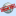
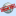

Home Page/Discuss
This page is for dicsussion & suggestions of what to put on the Home Page and how to organize it. Anything else – go somewhere else: eg Project Skins, etc.
Navigation problems
Overall summary of comments so far: woolly distinction between Tutorials / Encyclopedia / whatever – Unrealed beginners like to have a big sign that says "tutorials here", apparently. (it comes from growing up with the STRAT menu in windoze, I suspect  )
)
Suggestions:
- How about splitting the home page into 'Tutorials Unreal Tournament 2003' and 'Tutorials Unreal Tournament', And under those headings specified links to pages with kind of tutorials like mapping, modeling, coding, whatever.. This would make it far easier for dummies like me where to search And it is also easier for people who write tutorials to put them in the right category.. At the moment the homepage is just a 'mess'.. lol..
- Split the Home page into "Welcome Visitors" (the default site page) and "Contents Page".
The monolithic indexes
Tarquin: We seem to be getting more monolithic indexes:
I don't like any of these. They're too long to load and there is simply too much going on. It's unrealistic to give people the ENTIRE content of the site on a single page. If someone wants to compile an Alphabetical index, then go ahead, that could be a good idea, but not for the Home Page
The current forward index is a two-tier system like this:
Home Page
|
__________________________________________ .... >
| | | |
UnrealScript Architecture Lighting Bot Support etcMany people complain about the Home page's organization. Is the above not clear from the way it's presented?
ZxAnPhOrIaN: I think that the home page's layout is just fine. I rarely use the homepage for mapping and coding links. I use the sidebar.
Discussion and Comments section concerns
ZxAnPhOrIaN: I have just realized that people put comments on the bottom of the page (below the category links), not in the comments section. Do they breeze through the pages and forget where the comments section is? It is starting to disturb me. It led me to believe that all discussion areas on the wiki should be removed.
CH3Z: ???
Mychaeel: Very simple: Make the "Comments" area the last item on a page. To start with, don't create one that's empty; let people who want to comment add it when it becomes necessary.
Tarquin: I prefer the category at the very bottom. Zxan, if you find people have put the comments bewlo the categories ... just move them back up 
Mychaeel: With "very bottom" I mean "just above the category list." ZxAnPhOrIaN has a habit of wanting the "discussion" somewhere in the middle of the page.
ZxAnPhOrIaN: I don't put it in the middle of the page! On my personal page maybe, but not on other pages!
Mosquito: Please put a modelling section on the home page and on the sidebar. Thanks
Mychaeel: Do it yourself – that's what Home Page/Changes is for. – As for the side bar the same goes, but be sure to also remove some of the existing links (in an educated fashion) as to keep the total length of the sidebar unchanged.
Abe: Hey, the sidebar of the wiki home page and every other page is fux0red. It's at the very bottom after all this stuff. Is anyone else seeing this? BTW, this is my first edit, I hope that I haven't screwed up this page. This is also a problem in the offline wiki...
Mychaeel: Actually, it's your browser not supporting the CSS that normally places the sidebar where it belongs: in the upper-left corner. See Wiki Sidebar/Discuss.
Tarquin: You can either change to a different skin in your sire preferences, or download Mozilla (it's free!)
GRAF!K: Download Mozilla at http://www.mozilla.org.
I noticed the HTML source for the sidebar is at the end of the document. If moved to the top, would this fix the problem?
Mychaeel: There's a point behind the source for the sidebar being at the bottom – that it's loaded last as well, after the more important content –, so putting it at the top of the source would defeat that purpose completely.
GRAF!K: I'm not sure about Offline Wiki being on the home as "site news." Offline Wiki has been going for quite a while now, and it looks kind of odd as the only item in Site News. Perhaps we could just delete that and leave the anouncement under the boldface offline reader warning. I'll try something like that on /changes.
Mychaeel: You have a point. I've removed the entire "News" section for now – news only make sense if they're kept fresh.
GRAF!K: Thank you, Mychaeel. Sorry if I sounded rude. 
Tarquin: Good point. I only put the news section in for people who arrive from BU hosted site news. But now there's a link to Featured Pages, which isn't locked, so anyone can post about new pages there.
Foxpaw: The styles stopped working all of a sudden at about.. the time of this message.  A few minutes ago all styles on the wiki ceased to function. I don't know if it is just me, though.. did anyone else experience this or is something up with my browser?
A few minutes ago all styles on the wiki ceased to function. I don't know if it is just me, though.. did anyone else experience this or is something up with my browser?
Mychaeel: The forums don't work either, and neither do other hosted sites such as http://www.planetjailbreak.com. That happened yesterday morning already. It's not related specifically to the Unreal Wiki.
Foxpaw: Oh. It didn't appear to affect me until the time that I posted that message. Styles appear to be working again though now.
empty_other: A new "editor" here, so doesnt know where to start right now...But for the moment its only ONE thing i would have wanted on this Wiki. I noticed your name was UNREAL Wiki and not UnrealEd Wiki. And i come to think, what im looking for is some "Unreal Universe" history (for those not noticed: Mostly of the characters in UT99 have backgroundstories, many of them okey enough to get an idea about another outside universe, outside the tournament). Three pages who need to be made: General Timeline, Races and Famous/important characters. Just working on the idea now, but if anybody has a good reason i should not do it, say so...Or else, help me make it.
Favicon
Zxanphorian: I have made a favicon for the wiki. Here it is (you will have to convert it to an .ico file, btw): -[DELETED]-
Pingz: Upload .PNGs ( jpg compression sucks ) at 48x48, 32x32, and 16x16. You need the different sizes if you want them to look good on a windows machine. I'll then convert them into a .png and .ico for use in Mozilla and IE. Even then realize that favicons are buggy in IE... they don't always show up.
Zxanphorian: The favicons work for me in IE. The [HowStuffWorks] favicon is a black and white picture of a person's head opened with a world in it, for example. Sure, i will upload in PNG's at those resolutions. (You have to bookmark/favorite the page or put it in the links bar to see the favicon.) Also, the admins (tarq and mych) have to upload the icon for it to work.
Zxanphorian: Here they are (i included the master copy if you don't like the resizing) : ![[favicon32]](images/favicon32.png) 

Pingz: Ok i merged the 3 sizes into a single .ico file for windows which can be downloaded [here]. All that is needed is for an admin to upload the favicon.ico and favicon.png ( should be the 16x16 one ).
Mychaeel: Alright – I've uploaded wiki_favicon_48_32_16.ico (as favicon.ico) and favicon16 (as favicon.png). Please check whether it works as supposed. Good work.
Pingz: Seems to work for both IE6 and Mozilla over here.
EntropicLqd: Seems OK for IE5.
Zxanphorian: Works in IE6. pingz, what is a good icon maker?
GRAF1K: Visual Studio .NET and Visual Studio 6 have icon tools, but being a gamer rather than webapp developer, you probably don't have access to those. I dont know any others.
RDGDanClark: The Favicon is supposed to happen automatically, right? It's not showing up for me, I'm a Mozilla user. Maybe I'm missing something...
Zxanphorian (Not logged in): Well, you have to bookmark it first
Mosquito: CSS sheets seem to be busted across the board. :S
Wormbo: BeyondUnreal is having problems ATM.
CH3Z: I hope someone has all the wiki's graphics backed up. But how do you ever notice when someone overwrites one they shouldn't have, in time revert it before you overwrite the original with your next backup? Ayway, just bringing this up after noticing that someone had overwritten "favicon" on this page with that car pic.
TroyEB: Here is a very good and complete UnrealScript doc page that should be linked http://unreal.student.utwente.nl/uncodex-ut2004/
Mychaeel: It is – linked from UnCodeX.
zugy: The search is looking really wierd...

Not sure what's causing it...I'm using IE 6.0 (and no, I don't feel like using firefox thank you very much ) Windows XP SP2....
Tarquin: I see the same thing on Firefox.
Mychaeel: Hmm. Guess I'll have to adapt the Google result page parser a bit.